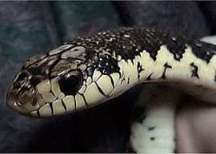
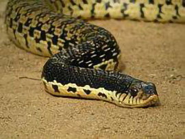

Leioheterodon Madagascariensis


Leioheterodon Madagascariensis, plus connu en Malgache sous le nom de Menarana, est un serpent endémique de Madagascar.
Le Menarana est le serpent le plus inquiétant de l’île, en effet cette vipère est considérée comme le serpent le plus agressif de l’île; De plus le Menarana est considéré comme tabous ou « Fady » en Malgache , il se trouve en général dans les régions de Sofia et d’Alaotra…